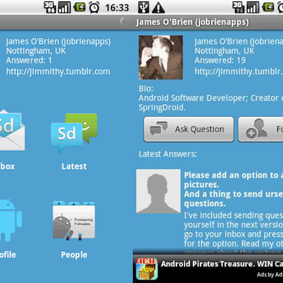

SpringDroid was android’s first native formspring application. Formspring was a question-and-answer social networking service. The application was part of Mashable’s must have social apps in their guide to getting started on android, and was given further credibility when recommended by formspring as the best android app for their service.
The application was acquired and later rebranded by myYearbook.
Click here to visit my blog and see the history of Springdroid